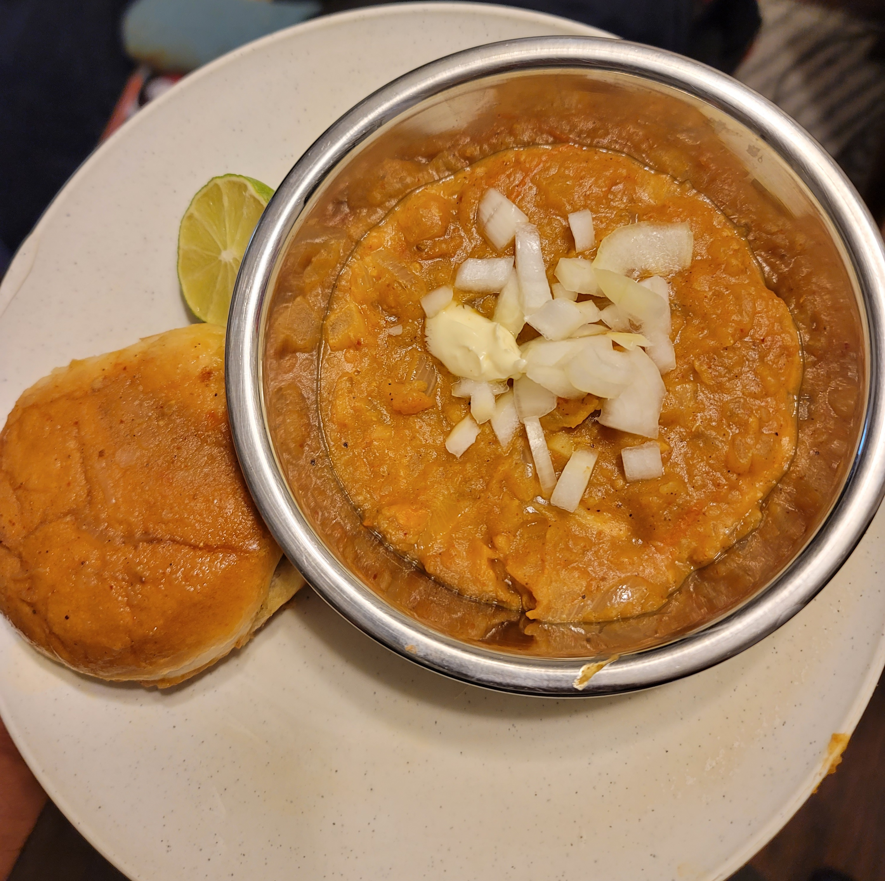
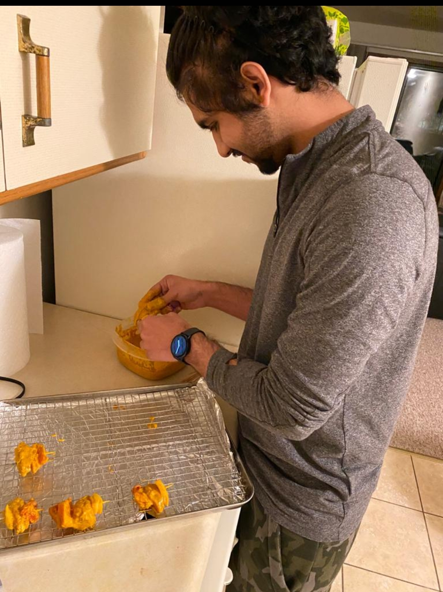

I had no idea about cooking when I first came to the United States but as
time progressed I started cooking as I couldn't eat out all the time, I started preparing
food and then as time progressed I got really good at cooking and also loved cooking for myself
and other people too.
I will list a few of the dishes that I cooked over the years that are my favourite and also
came out really well
PAV BHAJI
This is one my favourite dishes as well as a really difficult dish to make.
While making this dish from scratch I took me a really long time to make.
I had to put in a lot of masalas and cook it well so that the flavour does not go away.

Chicken Tikka
This is one of the most popular as well as one of the most known Indian dishes all over the world.
This was the first dish I ever cooked too. It came out really well to my surprise. The marinated chicken was cooked reaaly well
in the oven and I even gave it a smoky flavor by using a charcoal.

Chilli Chicken
This is a indo chinese food dish that is made using a lot of indian spices as well a lot of other sauces.
This dish was fairly simple to make and did not take a lot of time. However, I burnt myself a bit when deepfrying the chicken.